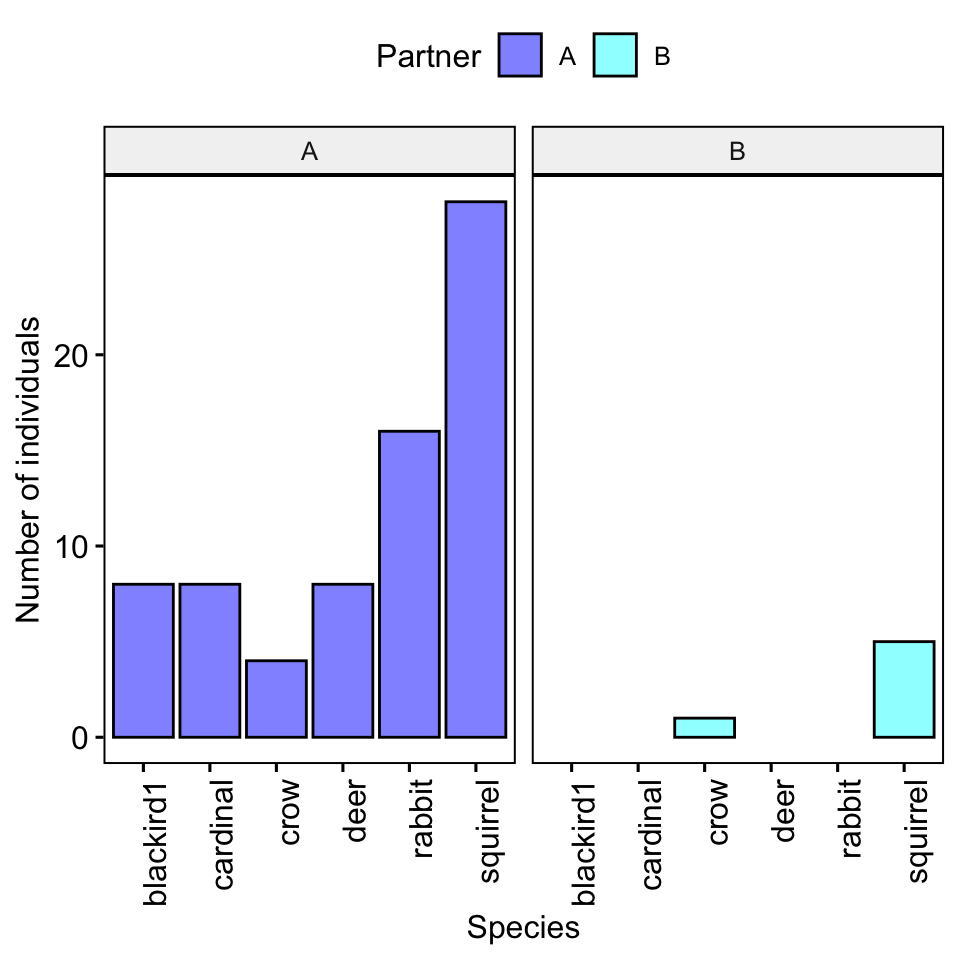
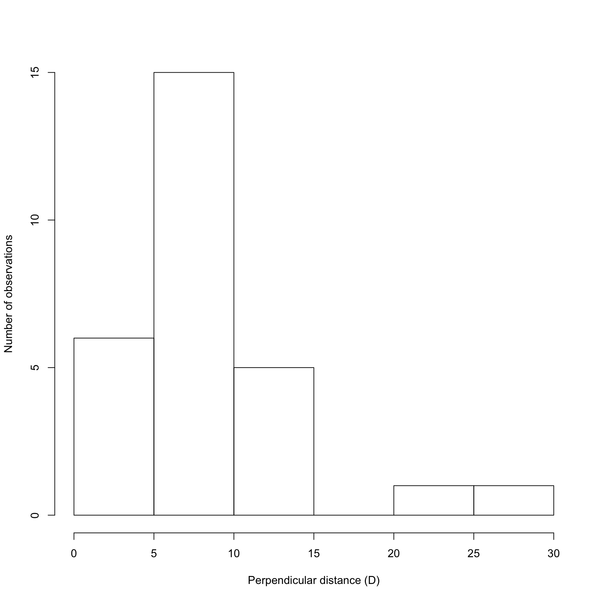
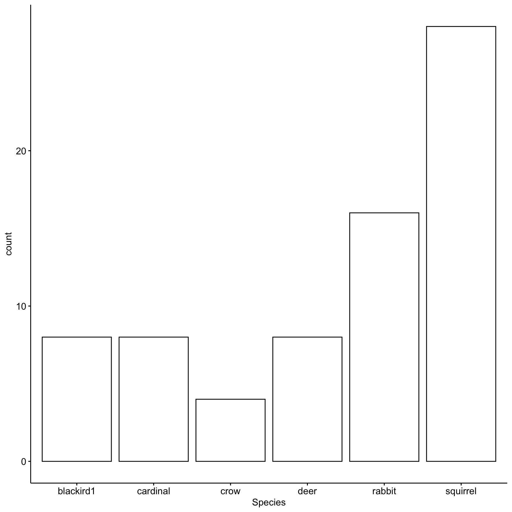
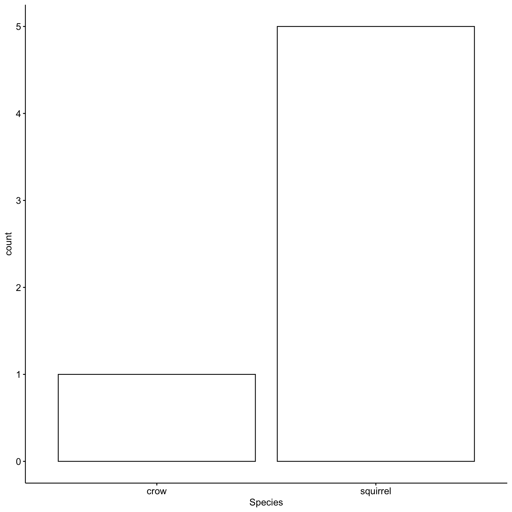
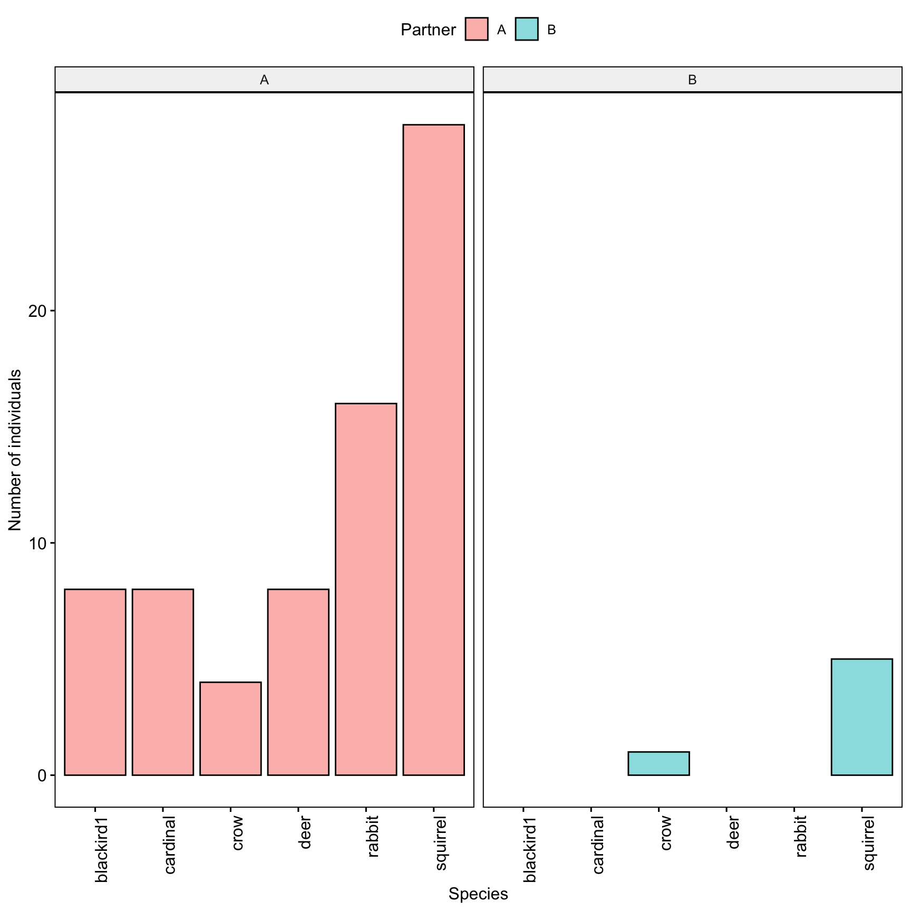

5 Lab 5. Estimating Population Density and Biodiversity

Background
In this lab you will become familiar with the ways that scientists estimate population density and biodiversity of terrestrial vertebrates.
Goals of the exercises
The main goal(s) of today’s lab are to:
1) Estimate population density of focal vertebrates from the field lab.
2) Learn the difference between alpha, beta and gamma diversity.
3) Compare population density and biodiversity across your sampling sites.
Getting started
First we need to load the relevant packages for our data analysis. Packages contain all the functions that are needed for data analysis.
Then we read in our data
5.1 Part 1. Population density estimation.
First let’s focus on your data.
NOTE: you need to change ‘A’ to the name you used!
Now we will subset the data to focus on your focal species for density estimation. NOTE: in this example we are subsetting the data so that we only have the squirrels; you will need to change the code to subset based on your focal species!
Here we will determine the width of our sampling area by creating a histogram of perpendicular detection distances. We will identify the point where our detections start to dropoff. We will assume that after this point our ability to detect animals past that distance drops substantially, and including observations past this distance could potentially bias our results.
hist(MyCensusDataFocal$PerpendicularDistance,xlab='Perpendicular distance (D)',
ylab='Number of observations',main='')
In this example there is a clear break between 15 and 20 meters, so we will only use observations that were within 15 meters.
NOTE: Your data will look different than this!
Change the value (in this example 15) to the cutoff point indicated in your data!
# Here we subset our data so that it only includes detections that were within 15 meters of the census route
MyCensusDataFocalAdjusted <- subset(MyCensusDataFocal,PerpendicularDistance <CutOffPoint )Now we need to subset by each site.
NOTE: You will need to change to the site names you used
MyCensusDataFocalSiteA <- subset(MyCensusDataFocalAdjusted,Site=='SiteA')
MyCensusDataFocalSiteB <- subset(MyCensusDataFocalAdjusted,Site=='SiteB')Now we will calculate the population density based on our two surveys. Change the following to indicate the distance (in meters) of your survey for site A. This will be the actual straight-line distance you walked.
Now we will calculate the area of our census. The sample area (a) is equal to the length of the transect multiplied by twice the width or a= 2wl. We divide by 1000 to convert our answer to square kilometers.
## [1] 15Now we need to calculate the number of focal animals observed using the following code.
Then we can calculate the density by dividing the total number of animals we observed by the area we censused.
## [1] 0.4666667Now we will calculate the population density based on our second survey. Change the following to indicate the distance (in meters) of your survey for site B.This will be the actual straight-line distance you walked.
Now we will calculate the area of our census. The sample area (a) is equal to the length of the transect multiplied by twice the width or a= 2wl.We divide by 1000 to convert our answer to square kilometers.
## [1] 15Now we need to calculate the number of animals using the following code.
Then we can calculate the density by dividing the total number of animals we observed by the area we censused.
## [1] 1.133333Now we can compare population density using the following code. The code below asks if the population density of site A was higher than site B?
## [1] FALSEThe code below asks if the population density of site B was higher than site A?
## [1] TRUEQuestion 1. What were the population density estimates (reported as number of individuals per square kilometer) for your two sites? Do your results of the population density estimates match your predictions? Why or why not?
5.2 Part 2. Comparing biodiversity.
5.2.1 Alpha diversity.
First, we will estimate the alpha diversity, or the diversity within a particular area or ecosystem. The alpha diversity is simply the number of different species present at each site.
Here we subset by partner and site A (you may need to change these!)
MyCensusDataSiteA <- subset(MyCensusData,Partner=='A' & Site=='SiteA')
# What were the unique species present?
unique(MyCensusDataSiteA$Species)## [1] cardinal blackird1 rabbit deer squirrel crow
## Levels: blackird1 cardinal crow deer rabbit squirrel# How many unique species were there?
SiteANumberSpecies <- length(unique(MyCensusDataSiteA$Species))
SiteANumberSpecies## [1] 6Here we subset by partner and site B (you may need to change these!)
MyCensusDataSiteB <- subset(MyCensusData,Partner=='A' & Site=='SiteB')
# What were the unique species present?
unique(MyCensusDataSiteB$Species)## [1] squirrel blackird1 rabbit deer crow
## Levels: blackird1 cardinal crow deer rabbit squirrel# How many unique species were there?
SiteBNumberSpecies <- length(unique(MyCensusDataSiteB$Species))
SiteBNumberSpecies## [1] 5Question 2. Which of your sites had higher species richness (i.e. number of species)?
5.2.2 Beta diversity.
Now we will estimate beta diversity, which estimates changes in species diversity between ecosystems or along environmental gradients.
# This code tells us which species both sites have in common
intersect(unique(MyCensusDataSiteA$Species),unique(MyCensusDataSiteB$Species))## [1] "blackird1" "rabbit" "deer" "squirrel" "crow"# Now we calculate the number of species in common
SpeciesInCommonBothSites <- length(intersect(unique(MyCensusDataSiteA$Species),unique(MyCensusDataSiteB$Species))
)
SpeciesInCommonBothSites## [1] 5To investigate community similarity we will calculate Sørenson’s index; a value of 1 means exactly the same number of species a value of 0 means no overlap.
Beta diversity = 2c / S1 + S2
Where c is the number of species the sites have in common, S1 is the number of species at the first site and S2 is the number of species at the second site
## [1] 0.90909095.2.3 Now we will use your partner’s data to estimate alpha diversity
MyPartnersCensusDataSiteA <- subset(CensusData,Partner=='B' & Site=='SiteC')
unique(MyPartnersCensusDataSiteA$Species)## [1] squirrel crow
## Levels: blackird1 cardinal crow deer rabbit squirrel## [1] 2## [1] 2MyPartnersCensusDataSiteB <- subset(CensusData,Partner=='B' & Site=='SiteD')
unique(MyPartnersCensusDataSiteB$Species)## [1] squirrel
## Levels: blackird1 cardinal crow deer rabbit squirrel## [1] 1## [1] 1Question 3. How did the alpha diversity of each of your sites compare with that of your partner?
5.2.4 Gamma diversity
Gamma diversity is the total number of species over a large area or region; there are many different ways that this can be measured. The way we will do it is a bit of an oversimplification by simply comparing the number of species seen during the census at both locations.
First we subset by the first partner
## [1] cardinal blackird1 rabbit deer squirrel crow
## Levels: blackird1 cardinal crow deer rabbit squirrelThen we plot the results

Now we subset by the second partner
## [1] squirrel crow
## Levels: blackird1 cardinal crow deer rabbit squirrelThen we plot the results

Now we can plot all the data together, separated by partner
gghistogram(data=CensusData, x='Species',stat="count",
facet.by = 'Partner',x.text.angle =90,
fill='Partner')+xlab('Species')+ylab('Number of individuals')
Question 4. How did the gamma diversity of your site compare with that of your partners?
5.3 Part 3. Biodiversity indices in the real world.
There are special packages in R that can measure different diversity indices, as biodiversity indices are tools many ecologists use. The package we will use is called ‘vegan’.
First we need to convert our data into a table that can be used to calculate the indices.
Simpson’s Index (D) measures the probability that two individuals randomly selected from a sample will belong to the same species (or some category other than species). With this index, 1 represents infinite diversity and 0 means no diversity.
## SiteA SiteB SiteC SiteD
## 0.7962963 0.6728395 0.4444444 0.0000000Species evenness refers to how close in numbers each species is in an environment. We can calculate evenness using the following code. The value is constrained between 0 and 1, with communities that have a more even representation of species having values closer to 1.
## SiteA SiteB SiteC SiteD
## 0.4444214 0.4180587 0.6411978 NaNQuestion 5. Which of the four sites you analyzed was most diverse? Which was the most even? Why is it important to consider diversity and evenness when studying biodiversity?